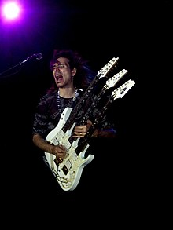
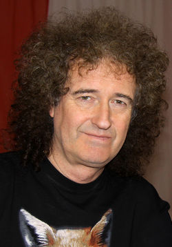

John Petrucci

John Peter Petrucci (12 de julio de 1967) es un virtuoso guitarrista estadounidense, miembro y fundador de la banda de metal progresivo Dream Theater. Es considerado como uno de los mejores guitarristas del mundo. Fue elegido como el 2.º mejor guitarrista en el libro The 100 Greatest Metal Guitarists (los 100 mejores guitarristas del metal),el 27.º según la revista Guitar World,y catalogado por Guitar One como uno de los 10 mejores guitarristas de todos los tiempos. Petrucci se crio en una familia italo-estadounidense en Boston. Aunque sus padres no son músicos, su hermana mayor tocaba el piano y el órgano eléctrico, su hermano el bajo y su hermana menor el clarinete. Aunque su hermana influyó en sus intereses musicales hasta cierto punto, Petrucci dice que empezó a tocar la guitarra eléctrica porque todos los muchachos del vecindario tocaban y le parecía algo divertido. Estudió en la escuela de música contemporánea de Berklee en Boston, donde, junto a su compañero de secundaria John Myung, conocieron a Mike Portnoy y fundaron lo que hoy es Dream Theater, una de las bandas más reconocidas en su género.
Steve Vai
Steven Siro Vai (Carle Place, 6 de junio de 1960) es un guitarrista, compositor, y productor musical estadounidense que ha vendido más de 15 millones de álbumes. Después de iniciar su carrera como transcriptor de música para Frank Zappa, Vai grabó y estuvo de gira en la banda de Zappa de 1980 a 1982. Comenzó su carrera como solista en 1983, tiene ocho álbumes en solitario y ha ganado tres premios Grammy. También ha grabado y realizado giras con Public Image Ltd, Alcatrazz, David Lee Roth y Whitesnake. Vai ha sido miembro regular del G3 tour que comenzó en 1995. En 1999, Vai comenzó su propio sello discográfico Favored Nations, con la intención de mostrar como él lo describe, "... a los artistas que han alcanzado el nivel de rendimiento más alto en sus instrumentos elegidos ". Ocupa el puesto n°10 de la lista los mejores guitarristas de todos los tiempos, publicada por la revista Guitar World.
Jimi Hendrix

James Marshall Hendrix (nacido como Johnny Allen Hendrix; Seattle, Washington; 27 de noviembre de 1942 - Notting Hill, Londres, Inglaterra; 18 de septiembre de 1970), más conocido como Jimi Hendrix, fue un guitarrista, cantante y compositor estadounidense. A pesar de que su carrera profesional solo duró cuatro años, es considerado uno de los músicos y guitarristas más influyentes de la historia del rock. El Salón de la Fama del Rock and Roll lo describe como «Indiscutiblemente uno de los músicos más grandes de la historia del rock e indudable inspiración de los guitarristas actuales»
Brian May
Brian Harold May (Londres, Inglaterra 19 de julio de 1947) es un músico, compositor, cantante, multiinstrumentista, activista y astrofísico británico. Es conocido por ser guitarrista, compositor, vocalista y en ocasiones teclista de la banda británica Queen. Compuso muchos de los temas de Queen, como "Now I'm Here", "'39", "Sweet Lady", "Tie Your Mother Down", "We Will Rock You", "Fat Bottomed Girls", "Save Me", "Sail Away Sweet Sister", "Flash", "Hammer to Fall", "Who Wants to Live Forever", "I Want It All", "The Show Must Go On", "Headlong", "Too Much Love Will Kill You" o "No-One but You (Only the Good Die Young)". Utiliza una guitarra eléctrica hecha por él y su padre, llamada Red Special.Es considerado uno de los guitarristas más importantes y originales de la música popular.En 2003 y 2011 la revista Rolling Stone lo ubicó en el puesto 26 de su lista de los guitarristas más grandes de todos los tiempos. En 2005 una entrevista de Planet Rock lo ubicó como el puesto 7 de los mejores guitarristas.En 2020 fue elegido como el mejor guitarrista de todos los tiempos por los lectores de la revista "Total guitar".